레미 AI
이제 직접 찾지 말고,
레미에게 물어보세요.
AI 대화 채팅 기능을 통해 ‘레미’에게 식단 추천, 루틴 추천 운동 추천, 기록 피드백을 받아보세요.
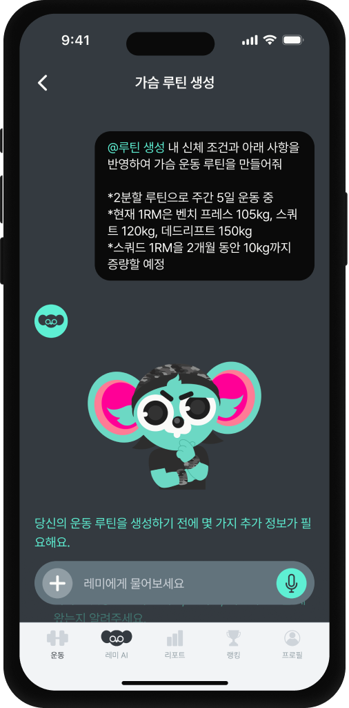
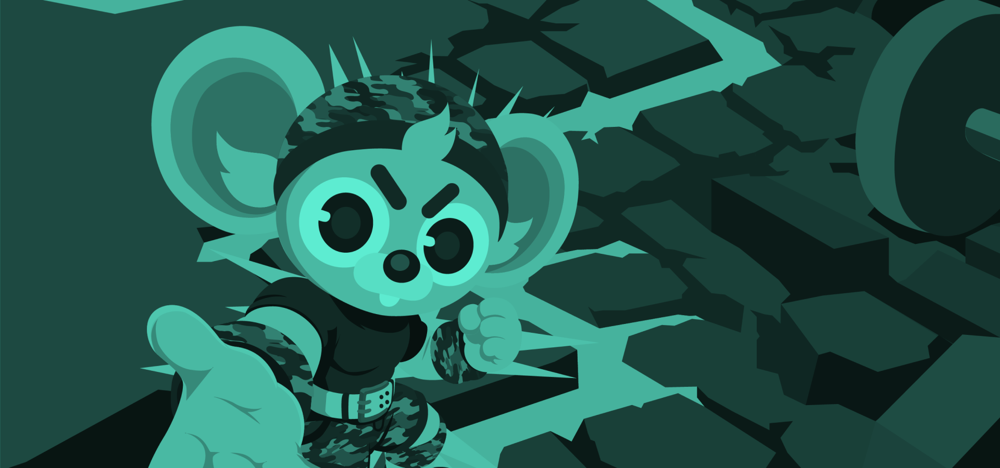
AI 파트너가 운동 중 루틴 수정과 운동법 학습, 채팅으로 운동 루틴에 대해 상담까지.
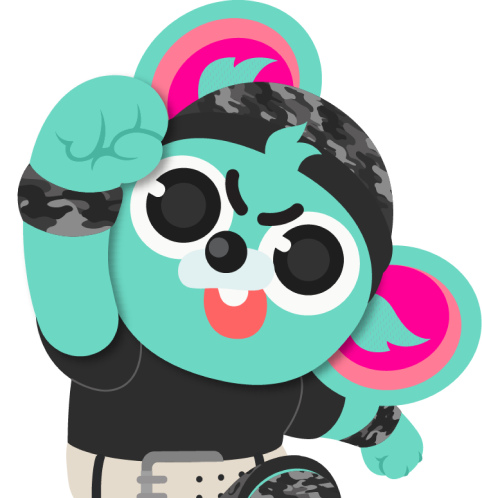
BACKGROUND
운동을 시작한지 얼마 안되었을 때는 근육량 자체가 적기 때문에 작은 노력으로도 근육이 쉽게 붙지만, 이후 운동 강도에 근육이 적응하게 되어 많은 사람들이 해답을 찾지 못한 채 계속 제자리걸음을 하게 됩니다.
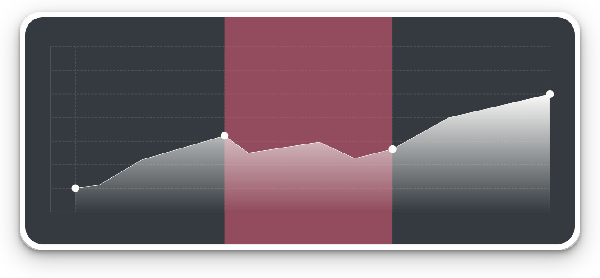
입문기
1차 성장기
정체기
2차 성장기
유지기
브랜드 아이덴티티
스팟미는 무거운 운동 기구를 들 때 “나 좀 봐줘”라는 뜻의 헬스 용어에서 착안하여 사용자의 운동 자체를 ‘보조’해주겠다는 의미를 담았어요.
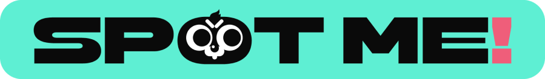
운동
목표를 향한 반복적인 성장
게이미피케이션
목표, 미션, 보상, 피드백
해야 하는 일이 아니라
계속하고 싶은 경험
목표, 미션, 보상, 성장, 피드백 같은 게임 구조를 통해 사용자가 운동을 ‘해야 하는 일’이 아니라 ‘계속하고 싶은 경험’으로 느끼게 만들고자 했습니다.
레미 AI
AI 대화 채팅 기능을 통해 ‘레미’에게 식단 추천, 루틴 추천 운동 추천, 기록 피드백을 받아보세요.

루틴
운동 루틴에 대해 고민하지 말고 사용자의 데이터를 기반으로 AI추천 루틴을 받아보세요.
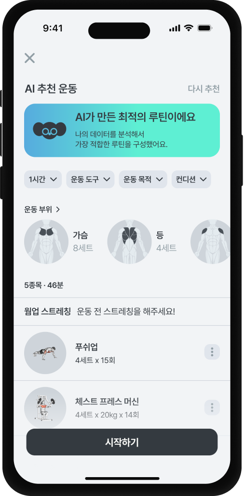
운동 분석
운동 중 파트너 ‘레미'가 모르는 운동법을 알려주거나, 운동이 막힐 때 루틴 수정을 제안해줄 수 있어요.
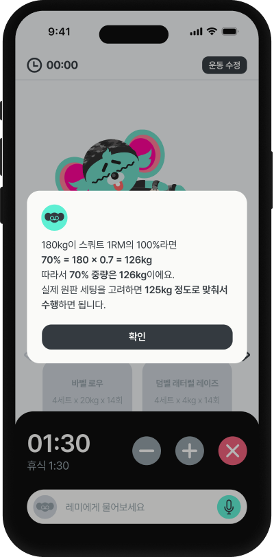
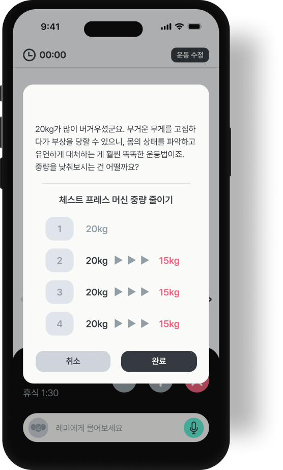
리포트
운동 분석을 통해 사용자가 얼만큼 운동했는지 확인하고 향후 운동 방향을 정할 수 있어요.
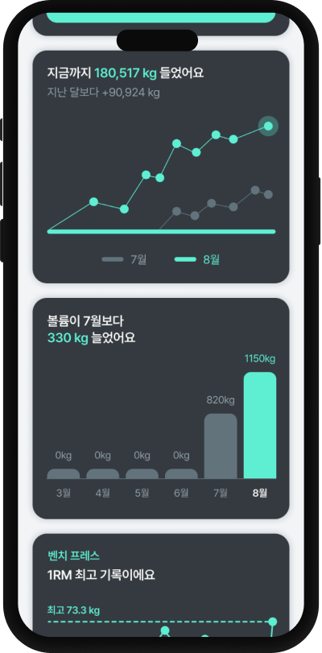
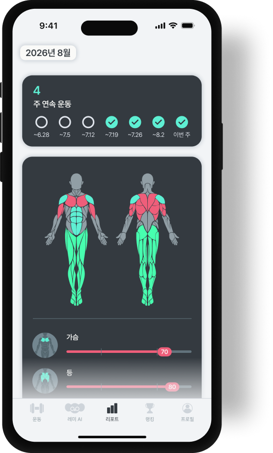
퀘스트
운동 세트를 완료할 때마다 파트너 레미가 몬스터에게 데미지를 입힐 수 있어요.
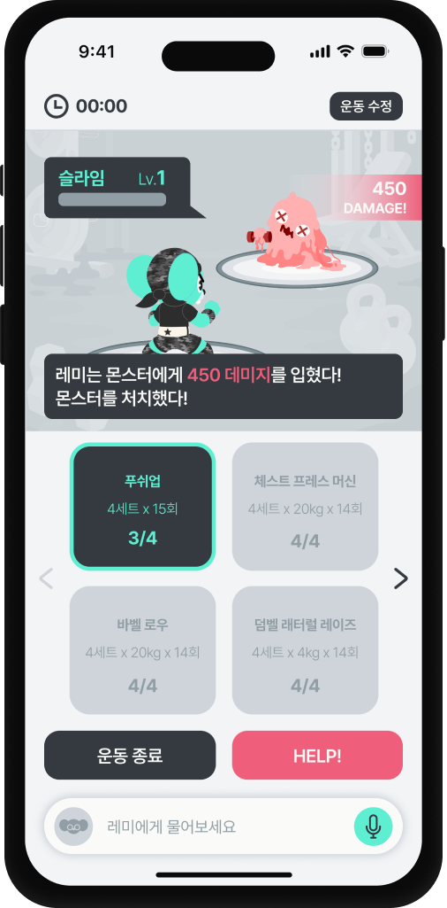
퀘스트
주간마다 초기화되는 운동 퀘스트와 업적을 수행하여 가상의 재화를 획득해보세요.
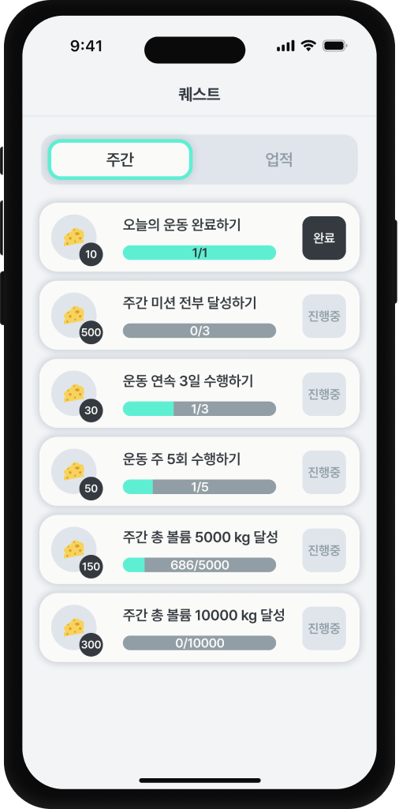
헬스장 키우기
운동 퀘스트를 진행하여 획득한 재화로 자신만의 가상 헬스장을 키울 수 있어요.
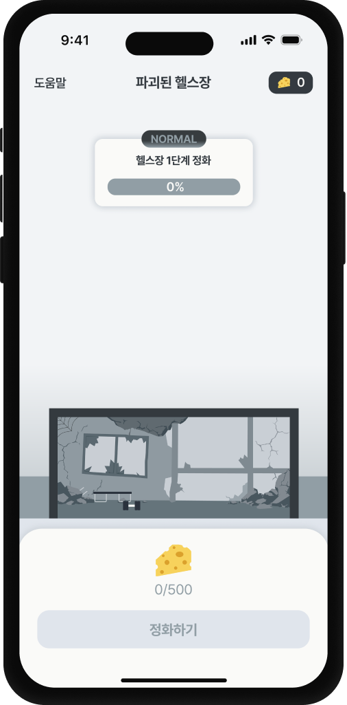
레미 AI
여태까지 운동 볼륨을 통해 어플 유저들과 경쟁하고 자신이 어느정도인지 티어를 통해 확인해보세요.
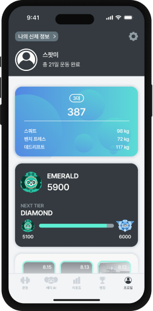
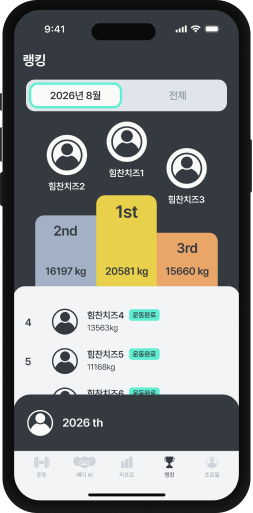
디자인 시스템
Primary
#343A40
Secondary
#919EA5
Primary
#F2F4F6
Secondary
#FAFAF8
Pretendard
프리텐다드
H1
운동 정체기 극복을 위한 AI 운동 파트너 앱, 스팟미
H2
운동 정체기 극복을 위한 AI 운동 파트너 앱, 스팟미
T1
운동 정체기 극복을 위한 AI 운동 파트너 앱, 스팟미
T2
운동 정체기 극복을 위한 AI 운동 파트너 앱, 스팟미
B1
운동 정체기 극복을 위한 AI 운동 파트너 앱, 스팟미
B2
운동 정체기 극복을 위한 AI 운동 파트너 앱, 스팟미
C1
운동 정체기 극복을 위한 AI 운동 파트너 앱, 스팟미
AI 운동 파트너이자 ‘스팟미’의 마스코트인 레미는 영미권에서 사용되는 ‘Gym rat’에서 모티브를 얻어 제작한, 운동을 사랑하는 쥐 캐릭터입니다. ‘레미'라는 이름은 쥐를 뜻하는 rat에서 유래했어요.
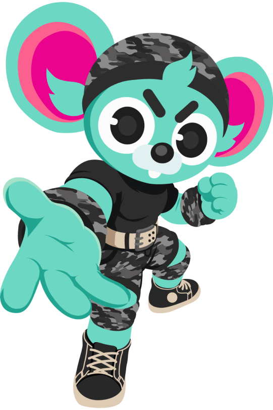